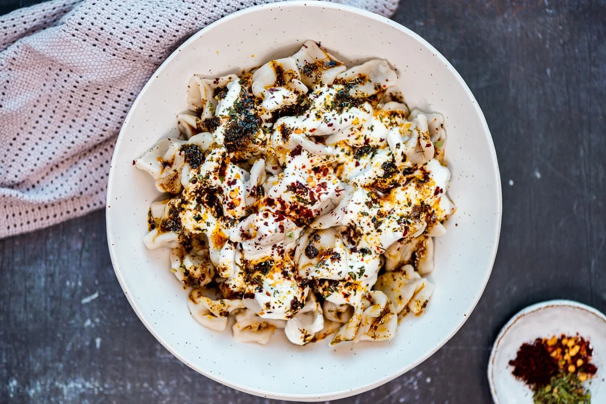

Manti are traditional Turkish dumplings filled with spiced ground meat and onions. The dumplings are most commonly topped with a sauce consisting of yogurt and garlic. The name of the dish is derived from mantu, meaning dumplings, and they were originally brought over from Central Asia to Türkiye by nomadic Turkish tribes in the 13th century. Today, manti dumplings are popular throughout Turkey, as well as in numerous other cuisines such as Armenian, Afghan, and Central Asian.
Meal prep time : 1 hour 20 minutes
Servings : 4